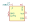
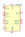

| Symbol |
Description |
AD8202 | Description: 28V High Common-Mode Voltage, Single-Supply Difference Amplifier, 10V/V x 2V/V adjustable gain, bandwidth 50kHz, Vcc=3.5V~12V, unidirectional, SOIC-8/MSOP-8
Keys: highside HS current sense amplifier linear buffered monitor preamp
Datasheet: https://www.analog.com/media/en/technical-documentation/data-sheets/AD8202.pdf |
AD8203 | Description: 30V High Common-Mode Voltage, Single-Supply Difference Amplifier, 7V/V x 2V/V adjustable gain, bandwidth 60kHz, Vcc=3.5V~12V, unidirectional, SOIC-8/MSOP-8
Keys: highside HS current sense amplifier linear buffered monitor preamp
Datasheet: https://www.analog.com/media/en/technical-documentation/data-sheets/AD8203.pdf |
AD8205 | Description: 65V Single-Supply, System Difference Amplifier, 50V/V gain, bandwidth 50kHz, Vcc=5V, SOIC-8
Keys: highside HS difference amplifier linear buffered
Datasheet: https://www.analog.com/media/en/technical-documentation/data-sheets/AD8205.pdf |
AD8206 | Description: 65V High Common-Mode Voltage, Bidirectional, Current Shunt Amplifier, 20V/V gain, bandwidth 100kHz, Vcc=5V, SOIC-8
Keys: highside HS current sense amplifier linear buffered
Datasheet: https://www.analog.com/media/en/technical-documentation/data-sheets/AD8206.pdf |
AD8208 | Description: 45V High Voltage, Precision Difference Amplifier, 10V/V x 2V/V adjustable gain, bandwidth 70kHz, Vcc=5V, unidirectional, SOIC-8/MSOP-8
Keys: highside HS current sense amplifier linear buffered monitor preamp
Datasheet: https://www.analog.com/media/en/technical-documentation/data-sheets/AD8208.pdf |
AD8209 | Description: 45V High Voltage, Precision Difference Amplifier, 7V/V x 2V/V adjustable gain, bandwidth 80kHz, Vcc=5V, unidirectional, MSOP-8
Keys: highside HS current sense amplifier linear buffered monitor preamp
Datasheet: https://www.analog.com/media/en/technical-documentation/data-sheets/AD8209.pdf |
AD8210 | Description: 65V High Voltage, Bidirectional Current Shunt Monitor, 20V/V gain, bandwidth 450kHz, Vcc=5V, SOIC-8
Keys: highside HS current sense amplifier linear buffered
Datasheet: https://www.analog.com/media/en/technical-documentation/data-sheets/AD8210.pdf |
AD8211 | Description: 65V High Voltage, Current Shunt Monitor, 20V/V gain, bandwidth 500kHz, Vcc=5V, SOT-23-5
Keys: highside HS current sense amplifier linear buffered
Datasheet: https://www.analog.com/media/en/technical-documentation/data-sheets/AD8211.pdf |

AD8212 | Description: 65V High Voltage Current, Shunt Monitor, adjustable gain, bandwidth 1000kHz, Vcc=7V~65V, current output, unidirectional, MSOP-8
Keys: highside HS current sense shunt monitor amplifier linear
Datasheet: https://www.analog.com/media/en/technical-documentation/data-sheets/AD8212.pdf |
AD8213 | Description: 65V Dual, High Voltage, Current Shunt Monitor, 20V/V gain, bandwidth 500kHz, Vcc=5V, MSOP-10
Keys: highside HS current sense amplifier linear buffered dual monitor
Datasheet: https://www.analog.com/media/en/technical-documentation/data-sheets/AD8213.pdf |
AD8215 | Description: 65V High Voltage, Current Shunt Monitor, 20V/V gain, bandwidth 450kHz, Vcc=5V, unidirectional, SOIC-8
Keys: highside HS current sense amplifier linear buffered monitor
Datasheet: https://www.analog.com/media/en/technical-documentation/data-sheets/AD8215.pdf |
AD8216 | Description: 65V High Bandwidth, Bidirectional Difference Amplifier, 3V/V gain, bandwidth 3MHz, Vcc=5V, SOIC-8
Keys: HS difference amplifier linear
Datasheet: https://www.analog.com/media/en/technical-documentation/data-sheets/AD8216.pdf |
AD8217 | Description: 80V High Resolution, Zero-Drift, Current Shunt Monitor, 20V/V gain, bandwidth 500kHz, internal LDO, unidirectional, MSOP-8
Keys: highside HS current sense amplifier linear buffered monitor
Datasheet: https://www.analog.com/media/en/technical-documentation/data-sheets/AD8217.pdf |
AD8218xCP | Description: 80V Zero Drift, Bidirectional, Current Shunt Monitor, 20V/V gain, bandwidth 450kHz, Vcc=5V, LFCSP-8
Keys: highside HS current sense amplifier linear buffered
Datasheet: https://www.analog.com/media/en/technical-documentation/data-sheets/AD8218.pdf |
AD8218xRM | Description: 80V Zero Drift, Bidirectional, Current Shunt Monitor, 20V/V gain, bandwidth 450kHz, Vcc=5V, MSOP-8
Keys: highside HS current sense amplifier linear buffered
Datasheet: https://www.analog.com/media/en/technical-documentation/data-sheets/AD8218.pdf |
AD8219 | Description: 80V Zero Drift, Unidirectional, Current Shunt Monitor, 60V/V gain, bandwidth 500kHz, Vcc=4V~80V, MSOP-8
Keys: highside HS current sense amplifier linear buffered monitor
Datasheet: https://www.analog.com/media/en/technical-documentation/data-sheets/AD8219.pdf |
AD8417 | Description: 70V Bidirectional, Zero Drift, Current Sense Amplifier, 60V/V gain, bandwidth 250kHz, VS=2.7V~5.5V, SOIC-8/MSOP-8
Keys: highside HS current sense amplifier linear
Datasheet: https://www.analog.com/media/en/technical-documentation/data-sheets/AD8417.pdf |
AD8418 | Description: 70V Bidirectional, Zero Drift, Current Sense Amplifier, 20V/V gain, bandwidth 250kHz, VS=2.7V~5.5V, SOIC-8/MSOP-8
Keys: highside HS current sense amplifier linear
Datasheet: https://www.analog.com/media/en/technical-documentation/data-sheets/AD8418.pdf |
BQ500100DCK | Description: 20V High side current sensor, Voltage Output, 50V/V Gain, SC-70-6
Keys: Current shunt monitor
Datasheet: http://www.ti.com/lit/ds/symlink/bq500100.pdf |
INA138 | Description: High-Side Measurement Current Shunt Monitor, 36V, SOT-23-5
Keys: current sense shunt monitor
Datasheet: http://www.ti.com/lit/ds/symlink/ina138.pdf |
INA139 | Description: High-Side Measurement Current Shunt Monitor, 40V, SOT-23-5
Keys: current sense shunt monitor
Datasheet: http://www.ti.com/lit/ds/symlink/ina169.pdf |
INA168 | Description: High-Side Measurement Current Shunt Monitor, 60V, SOT-23-5
Keys: current sense shunt monitor
Datasheet: http://www.ti.com/lit/ds/symlink/ina138.pdf |
INA169 | Description: High-Side Measurement Current Shunt Monitor, 60V, SOT-23-5
Keys: current sense shunt monitor
Datasheet: http://www.ti.com/lit/ds/symlink/ina169.pdf |
INA181 | Description: Bidirectional, Low- and High-Side Voltage Output, Current-Sense Amplifier, SOT-23-6
Keys: current monitor shunt sensor bidirectional
Datasheet: http://www.ti.com/lit/ds/symlink/ina181.pdf |
INA193 | Description: Current Shunt Monitor 16V to +80V Common-Mode Range, 20V/V, SOT-23-5
Keys: current sense shunt monitor
Datasheet: http://www.ti.com/lit/ds/symlink/ina193.pdf |
INA194 | Description: Current Shunt Monitor −16V to +80V Common-Mode Range, 50V/V, SOT-23-5
Keys: current sense shunt monitor
Datasheet: http://www.ti.com/lit/ds/symlink/ina193.pdf |
INA195 | Description: Current Shunt Monitor −16V to +80V Common-Mode Range, 100V/V, SOT-23-5
Keys: current sense shunt monitor
Datasheet: http://www.ti.com/lit/ds/symlink/ina193.pdf |
INA196 | Description: Current Shunt Monitor 16V to +80V Common-Mode Range, 20V/V, SOT-23-5
Keys: current sense shunt monitor
Datasheet: http://www.ti.com/lit/ds/symlink/ina193.pdf |
INA197 | Description: Current Shunt Monitor −16V to +80V Common-Mode Range, 50V/V, SOT-23-5
Keys: current sense shunt monitor
Datasheet: http://www.ti.com/lit/ds/symlink/ina193.pdf |
INA198 | Description: Current Shunt Monitor −16V to +80V Common-Mode Range, 100V/V, SOT-23-5
Keys: current sense shunt monitor
Datasheet: http://www.ti.com/lit/ds/symlink/ina193.pdf |
INA240A1D | Description: High- and Low-Side, Bidirectional, Zero-Drift, Current-Sense Amplifier With Enhanced PWM Rejection, 20V/V, SOIC-8
Keys: current monitor shunt sensor bidirectional high low
Datasheet: http://www.ti.com/lit/ds/symlink/ina240.pdf |
INA240A1PW | Description: High- and Low-Side, Bidirectional, Zero-Drift, Current-Sense Amplifier With Enhanced PWM Rejection, 20V/V, TSSOP-8
Keys: current monitor shunt sensor bidirectional high low
Datasheet: http://www.ti.com/lit/ds/symlink/ina240.pdf |
INA240A2D | Description: High- and Low-Side, Bidirectional, Zero-Drift, Current-Sense Amplifier With Enhanced PWM Rejection, 50V/V, SOIC-8
Keys: current monitor shunt sensor bidirectional high low
Datasheet: http://www.ti.com/lit/ds/symlink/ina240.pdf |
INA240A2PW | Description: High- and Low-Side, Bidirectional, Zero-Drift, Current-Sense Amplifier With Enhanced PWM Rejection, 50V/V, TSSOP-8
Keys: current monitor shunt sensor bidirectional high low
Datasheet: http://www.ti.com/lit/ds/symlink/ina240.pdf |
INA240A3D | Description: High- and Low-Side, Bidirectional, Zero-Drift, Current-Sense Amplifier With Enhanced PWM Rejection, 100V/V, SOIC-8
Keys: current monitor shunt sensor bidirectional high low
Datasheet: http://www.ti.com/lit/ds/symlink/ina240.pdf |
INA240A3PW | Description: High- and Low-Side, Bidirectional, Zero-Drift, Current-Sense Amplifier With Enhanced PWM Rejection, 100V/V, TSSOP-8
Keys: current monitor shunt sensor bidirectional high low
Datasheet: http://www.ti.com/lit/ds/symlink/ina240.pdf |
INA240A4D | Description: High- and Low-Side, Bidirectional, Zero-Drift, Current-Sense Amplifier With Enhanced PWM Rejection, 200V/V, SOIC-8
Keys: current monitor shunt sensor bidirectional high low
Datasheet: http://www.ti.com/lit/ds/symlink/ina240.pdf |
INA240A4PW | Description: High- and Low-Side, Bidirectional, Zero-Drift, Current-Sense Amplifier With Enhanced PWM Rejection, 200V/V, TSSOP-8
Keys: current monitor shunt sensor bidirectional high low
Datasheet: http://www.ti.com/lit/ds/symlink/ina240.pdf |

INA253 | Description: High Voltage, Bidirectional, Zero-Drift, Current-ShuntMonitor With Integrated, 2-m, Precision, Low Inductive Shunt Resistor, TSSOP-20
Keys: shunt current amplifier bidirectional
Datasheet: http://www.ti.com/lit/ds/symlink/ina253.pdf |
INA282 | Description: High-Accuracy, Wide Common-Mode Range, Bidirectional Current Shunt Monitors, Zero-Drift Series, 50V/V, SOIC-8/VSSOP-8
Keys: current monitor shunt sensor bidirectional
Datasheet: http://www.ti.com/lit/ds/symlink/ina282.pdf |
INA283 | Description: High-Accuracy, Wide Common-Mode Range, Bidirectional Current Shunt Monitors, Zero-Drift Series, 200V/V, SOIC-8/VSSOP-8
Keys: current monitor shunt sensor bidirectional
Datasheet: http://www.ti.com/lit/ds/symlink/ina282.pdf |
INA284 | Description: High-Accuracy, Wide Common-Mode Range, Bidirectional Current Shunt Monitors, Zero-Drift Series, 500V/V, SOIC-8/VSSOP-8
Keys: current monitor shunt sensor bidirectional
Datasheet: http://www.ti.com/lit/ds/symlink/ina282.pdf |
INA285 | Description: High-Accuracy, Wide Common-Mode Range, Bidirectional Current Shunt Monitors, Zero-Drift Series, 1000V/V, SOIC-8/VSSOP-8
Keys: current monitor shunt sensor bidirectional
Datasheet: http://www.ti.com/lit/ds/symlink/ina282.pdf |
INA286 | Description: High-Accuracy, Wide Common-Mode Range, Bidirectional Current Shunt Monitors, Zero-Drift Series, 100V/V, SOIC-8/VSSOP-8
Keys: current monitor shunt sensor bidirectional
Datasheet: http://www.ti.com/lit/ds/symlink/ina282.pdf |
LMP8640 | Description: Precision High Voltage Current Sense Amplifiers, 42V/76V, SOT-23-6
Keys: current monitor shunt sensor
Datasheet: http://www.ti.com/lit/ds/symlink/lmp8640.pdf |
LT6106 | Description: 36V Low Cost, High Side Current Sense, SOT-23-5
Keys: current sense
Datasheet: https://www.analog.com/media/en/technical-documentation/data-sheets/6106fb.pdf |
LTC6102HVxDD | Description: Precision Zero Drift Current Sense Amplifier, 100V, DFN-8
Keys: current sense amplifier
Datasheet: https://www.analog.com/media/en/technical-documentation/data-sheets/6102fe.pdf |
LTC6102HVxMS8 | Description: Precision Zero Drift Current Sense Amplifier, 100V, MSOP-8
Keys: current sense amplifier
Datasheet: https://www.analog.com/media/en/technical-documentation/data-sheets/6102fe.pdf |
LTC6102xDD | Description: Precision Zero Drift Current Sense Amplifier, 60V, DFN-8
Keys: current sense amplifier
Datasheet: https://www.analog.com/media/en/technical-documentation/data-sheets/6102fe.pdf |
LTC6102xDD-1 | Description: Precision Zero Drift Current Sense Amplifier, 60V, DFN-8
Keys: current sense amplifier
Datasheet: https://www.analog.com/media/en/technical-documentation/data-sheets/6102fe.pdf |
LTC6102xMS8 | Description: Precision Zero Drift Current Sense Amplifier, 60V, MSOP-8
Keys: current sense amplifier
Datasheet: https://www.analog.com/media/en/technical-documentation/data-sheets/6102fe.pdf |
LTC6102xMS8-1 | Description: Precision Zero Drift Current Sense Amplifier, 60V, MSOP-8
Keys: current sense amplifier
Datasheet: https://www.analog.com/media/en/technical-documentation/data-sheets/6102fe.pdf |
MAX4080F | Description: 76V, High-Side, Current-Sense Amplifiers with Voltage Output, Unidirectional, 5V/V Gain, SOIC-8/uMAX-8
Keys: current sense amplifier
Datasheet: http://datasheets.maximintegrated.com/en/ds/MAX4080-MAX4081.pdf |
MAX4080S | Description: 76V, High-Side, Current-Sense Amplifiers with Voltage Output, Undirectional, 60V/V Gain, SOIC-8/uMAX-8
Keys: current sense amplifier
Datasheet: http://datasheets.maximintegrated.com/en/ds/MAX4080-MAX4081.pdf |
MAX4080T | Description: 76V, High-Side, Current-Sense Amplifiers with Voltage Output, Unidirectional, 20V/V Gain, SOIC-8/uMAX-8
Keys: current sense amplifier
Datasheet: http://datasheets.maximintegrated.com/en/ds/MAX4080-MAX4081.pdf |
MAX4081F | Description: 76V, High-Side, Current-Sense Amplifiers with Voltage Output, Bidirectional, 5V/V Gain, SOIC-8/uMAX-8
Keys: current sense amplifier
Datasheet: http://datasheets.maximintegrated.com/en/ds/MAX4080-MAX4081.pdf |
MAX4081S | Description: 76V, High-Side, Current-Sense Amplifiers with Voltage Outpute, Bidirectional, 60V/V Gain, SOIC-8/uMAX-8
Keys: current sense amplifier
Datasheet: http://datasheets.maximintegrated.com/en/ds/MAX4080-MAX4081.pdf |
MAX4081T | Description: 76V, High-Side, Current-Sense Amplifiers with Voltage Output, Bidirectional, 20V/V Gain, SOIC-8/uMAX-8
Keys: current sense amplifier
Datasheet: http://datasheets.maximintegrated.com/en/ds/MAX4080-MAX4081.pdf |
MAX471 | Description: Precision, High-Side, Current-Sense Amplifiers, DIP-8/SOIC-8
Keys: current sense amplifier
Datasheet: http://pdfserv.maximintegrated.com/en/ds/MAX471-MAX472.pdf |
MAX472 | Description: Precision, High-Side, Current-Sense Amplifiers, DIP-8/SOIC-8
Keys: current sense amplifier
Datasheet: http://pdfserv.maximintegrated.com/en/ds/MAX471-MAX472.pdf |
NCS210 | Description: Current-Shunt Monitor, Voltage Output, Bi-Directional Zero-Drift, 200V/V Gain, SC-70-6
Keys: Current shunt monitor
Datasheet: https://www.onsemi.com/pub/Collateral/NCS210R-D.PDF |
NCS211 | Description: Current-Shunt Monitor, Voltage Output, Bi-Directional Zero-Drift, 500V/V Gain, SC-70-6
Keys: Current shunt monitor
Datasheet: https://www.onsemi.com/pub/Collateral/NCS210R-D.PDF |
NCS213 | Description: Current-Shunt Monitor, Voltage Output, Bi-Directional Zero-Drift, 50V/V Gain, SC-70-6
Keys: Current shunt monitor
Datasheet: https://www.onsemi.com/pub/Collateral/NCS210R-D.PDF |
NCS214 | Description: Current-Shunt Monitor, Voltage Output, Bi-Directional Zero-Drift, 100V/V Gain, SC-70-6
Keys: Current shunt monitor
Datasheet: https://www.onsemi.com/pub/Collateral/NCS210R-D.PDF |
NCV210 | Description: Current-Shunt Monitor, Voltage Output, Bi-Directional Zero-Drift, 200V/V Gain, SC-70-6
Keys: Current shunt monitor
Datasheet: https://www.onsemi.com/pub/Collateral/NCS210R-D.PDF |
NCV211 | Description: Current-Shunt Monitor, Voltage Output, Bi-Directional Zero-Drift, 500V/V Gain, SC-70-6
Keys: Current shunt monitor
Datasheet: https://www.onsemi.com/pub/Collateral/NCS210R-D.PDF |
NCV213 | Description: Current-Shunt Monitor, Voltage Output, Bi-Directional Zero-Drift, 50V/V Gain, SC-70-6
Keys: Current shunt monitor
Datasheet: https://www.onsemi.com/pub/Collateral/NCS210R-D.PDF |
NCV214 | Description: Current-Shunt Monitor, Voltage Output, Bi-Directional Zero-Drift, 100V/V Gain, SC-70-6
Keys: Current shunt monitor
Datasheet: https://www.onsemi.com/pub/Collateral/NCS210R-D.PDF |
ZXCT1009F | Description: High-Side Current Monitor, SOT-23
Keys: High side current monitor shunt
Datasheet: https://www.diodes.com/assets/Datasheets/ZXCT1009.pdf |
ZXCT1009T8 | Description: High-Side Current Monitor, SM8
Keys: High side current monitor shunt
Datasheet: https://www.diodes.com/assets/Datasheets/ZXCT1009.pdf |
ZXCT1010 | Description: Enhanced High-Side Current Monitors, SOT-23-5
Keys: High side current monitor shunt
Datasheet: https://www.diodes.com/assets/Datasheets/ZXCT1010.pdf |
ZXCT1107 | Description: Low Power High-Side Current Monitors, SOT-23
Keys: High side current monitor shunt
Datasheet: https://www.diodes.com/assets/Datasheets/ZXCT1107_10.pdf |
ZXCT1109 | Description: Low Power High-Side Current Monitors, SOT-23
Keys: High side current monitor shunt
Datasheet: https://www.diodes.com/assets/Datasheets/ZXCT1107_10.pdf |
ZXCT1110 | Description: Low Power High-Side Current Monitors, SOT-23-5
Keys: High side current monitor shunt
Datasheet: https://www.diodes.com/assets/Datasheets/ZXCT1107_10.pdf |